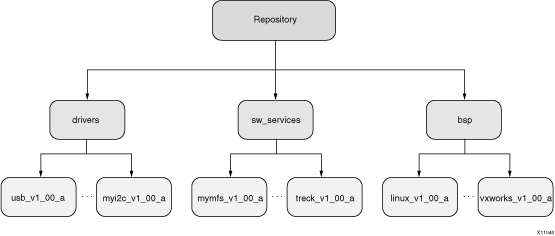
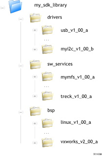

Board support packages (SDK)
Board support packages (external tools)
A software repository is a directory where you can install third-party software components, as well as custom copies of drivers, libraries, and operating systems. When you add a software repository, SDK automatically infers all the components contained with the repository and makes them available for use in its environment.
Your SDK workspace can point to multiple software repositories. The scope of the software repository can be global (available across all workspaces) or local (available only to the current workspace). Components found in any local software repositories added to an SDK workspace take precedence over identical components (if any) found in the global software repositories, which in turn take higher precedence over identical components found in the SDK installation.
An SDK repository requires a specific organization of the components. The diagram below gives an overview of how an SDK repository can be structured. Software components in your repository must belong to one of three different directories:
Within each directory, sub-directories containing the individual software components must be present.

The directory structure of an example repository is shown below. Name the top level repository directory to indicate its function in your development flow.


Board support packages (SDK)
Board support packages (external tools)

Setting up software repositories

Software Repositories dialog box
Copyright © 1995-2013 Xilinx, Inc. All rights reserved.